Your teammates' exercise material is below. I've provided their site / utility equipment description. Each AUXC should have at least one thumbnail. Click on the thumbnail to see the original image.
Use the browser's back button to return to this page from the full-sized image.
Your exercise requirements this week were to:
Note that if an AUXC checked in through multiple RMSs, then each check-in sentence is provided at the top of their information.
Jump to a specific AUXC's check-in material:
150, KI7DGC, VARA FM, W7BVT-10, 145.020, LAKE OSWEGO, CLACKAMAS, OREGON
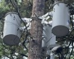Attached Image: Showing 3 large canisters atop a utility pole
Photo taken at the foot of the pole, facing SW, 238°
Location: 4309 Oakridge Rd, Lake Oswego, Lat/Long: 45.4018,-122.7221
Pole ID: (on South face, head high): PGE, D21 08C; 4021 (on West face, head high): SJC, 2/2021, 3/45 PGE, DFPA 60A, Sheridan, OR
Original image size: 503 x 409 pixels, 96 dpi, 87.6 kbytes
150, KK7MLS, VARA FM, KD7ZDO-12, 441.525, LAKE OSWEGO, CLACKAMAS, OREGON
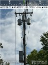No description provided.
Original image size: 175 x 233 pixels, 96 dpi, 97.3 kbytes
150, KF7KXX, VARA FM, KF7CFQ-10, 145.090, Anacortes, Skagit, Washington
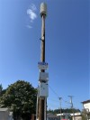Attached is an image of a tsunami warning siren.
The siren is located on the west bank of the Swinomish Channel, a waterway that separates Fidalgo Island from the mainland of Washington. It is located in the community of Shelter Bay on the Swinomish Reservation, directly across the Swinomish Channel from the town of La Conner, Washington. The siren serves both the Shelter Bay and La Conner populations.
The siren is located at the top of a post of approximately 30 feet. The base of the post is about 10 feet in elevation above sea level (Swinomish Channel).
The image was taken facing West, from a parking lot that borders the west side of Moorage Way in Shelter Bay, Lat/Long (48.3900, -122.5006).
A sign on the siren post informs the public of a schedule for siren testing.
Original image size: 637 x 849 pixels, 96 dpi, 92.5 kbytes
150, KD7DNM, VARA FM, W7YAM-12, 145.090, Lake Oswego, Clackamas, OR
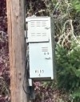This is a photo of the battery/power supply cabinet on a utility pole at NW corner of Childs Road and 35th Place in Lake Oswego.
Original image size: 535 x 682 pixels, 96 dpi, 78.1 kbytes
150, KI7O, VARA FM, W7LT-11, 144.910, Clarkes, Clackamas, OR
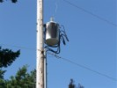PGE Pole #176 is at the end of Brooks Lane in Clarkes and is right in front of my house.
The transformer had a fault a few years ago and was repaired on site. I was standing at the end of Brooks lane and facing north west when the picture was taken.
Original image size: 1323 x 992 pixels, 96 dpi, 97.3 kbytes
150, WA6ZLV, VARA FM, KD7ZDO-11, 145.770, Lake Oswego, Clackamas, Oregon
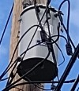Image taken between houses 313/347 Durham St., Lake Oswego, facing north.
Pole location: Lat/Long 45.4133, -122.6620.
Pole information:
Original image size: 608 x 704 pixels, 96 dpi, 97.2 kbytes
150, KJ7JCR, VARA FM, W7BVT-10, 145.020, Lake Oswego, Clackamas, Oregon
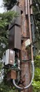The attached photo shows cellular phone equipment belonging to Crown Castle mounted on a utility pole at the intersection of Hillside Drive and Fernwood Circle (GPS coordinates 45.3995, -122.6999). Not shown (due to obstruction) is the cylindrical antenna at the top of the pole. The pole includes an FCC placard warning of the potential of RF radiation within a radius of three feet. The photo was taken from the base of the pole, facing northeast.
The pole includes three identifiers. First, an anodized aluminum (or aluminium) inventory tag with the legend "A4127556". Second, a PGE tag reading "D21 16B PGE POLE 6795". Lastly, the approximate street number of "2345" in black numerals against a high-visibility orange background.
Original image size: 393 x 899 pixels, 96 dpi, 97.4 kbytes
150, W6RKT, VARA FM, K7YFJ-12, 441.525, Battle Ground, Clark, WA
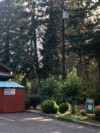Picture taken at the Lewisville Market of the power drop to the building from a street pole located at: 45.8178, -122.5477. Picture was taken looking southwest from the parking lot on the north side of the building.
Original image size: 535 x 713 pixels, 96 dpi, 97.7 kbytes
150, KC7TAK, VARA FM, KD7ZDO-11, 145.770, Clarkes, Clackamas, Oregon
The image was taken looking SW from accross the street. This powerpole is located along Butte Road in Beavercreek, between Ridge Rd. and Beeson Rd.
Pole details from name plate below:
| S/N: | 385701 |
| STR#: | Line/Buck LC |
| Height: | 50 FT |
| Class: | C2 |
| Weight: | 1752 LBS |
| MFG. Date: | 5/9/2025 |
| Customer: | PGE |
| Capacity: | 2.41 KIPS |
| Made in the USA, 100% Recyclable | |
| PGE oval tag: | D43-09C; PL 864; 2025 |
Original image size: 420 x 2411 pixels, 96 dpi, 98.3 kbytes
150, KI7LAG, VARA FM, KD7REX-10, 145.040, Beaverton, Washington, OR
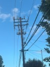Attached photo is a utility pole taken at: 45.3105, -122.5129
Photo was taken from the North West Power pole includes utility lines, phone lines, and appears to be a cellular hub.
Original image size: 563 x 750 pixels, 96 dpi, 70.2 kbytes
150, W7TEE, VARA FM, W7TPN-10, 145.710, Clarkes, Clackamas, Oregon
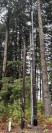Markings on Pole: PGE, D3-10C, PL 2366, 2025
Location: approx 100 feet North of S. Beeson Rd and S. Westby Ln
intersection 45.2305, -122.4297
Photo taken facing East
Original image size: 377 x 959 pixels, 96 dpi, 97.1 kbytes
150, W7CRI, VARA FM, W7OWO-10, 441.000, Wilsonville, Clackamas, Oregon
150, W7CRI, VARA FM, W7OWO-10, 145.030, Wilsonville, Clackamas, Oregon
Attached are 3 images of a potentialy high RF area.
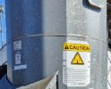 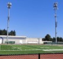The image was taken facing North East overlook the Scappoose Oregon High School football field and track at Lat/Long (45.7469 -122.8756).
There are three cell towers, with lights for the field, surrounding the field. One of my grandchildern attends there and father a bit nervous of the caution sign on one of the towers!
Original image 1 size: 513 x 480 pixels, 96 dpi, 33.5 kbytes
Original image 2 size: 228 x 388 pixels, 96 dpi, 21.8 kbytes
Original image 3 size: 395 x 319 pixels, 96 dpi, 25.3 kbytes
150, KI7BDP, VARA FM, W7LT-11, 144.910, OREGON CITY, CLACKAMAS, OR
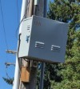Pole at the corner of Berta Dr and Clairmont Way in Oregon City. Sits on the SW corner of the intersection. Picture taken from the south looking north. Telephony Box owned by BCT - Beaver Creek Telephone with the unit code of O/12A. No ID found on the utility pole, but the most recent inspection tag is from 2022.
Approximate Location of the utility pole is: 45.3286, -122.5900
Original image size: 541 x 598 pixels, 96 dpi, 97.6 kbytes
150, KK7ZTC, VARA FM, KD7ZDO-11, 145.770, Lake Oswego, Clackamas, Oregon
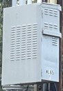Attached is an image of a utility box (possibly a fiber network distribution box), approximately 1 foot wide, 3 feet high, and 2 feet deep.
The image was taken facing east from the north corner of Dunmire Drive and Pilkington Road (Tee intersection). Lat/Long (45.3916, -122.7335)
This box is located approximately 12 feet above the gound and attached to a utility pole on the east side of Pilkington Road. The pole is adjacent to the driveway of a home at address 18430 Pilkington Road. The uility pole also has a transformer at the top of the pole. The utility pole is numbered: PGE D21 18D 10149.
Original image size: 728 x 1049 pixels, 96 dpi, 121.1 kbytes
150, KI7FCG, VARA FM, KD7ZDO-11, 145.770, BORING, CLACKAMAS, OR
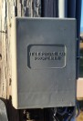Picture taken on Brooks Rd. near Boring. Facing north with a metal tag numbered 250889.
Original image size: 540 x 785 pixels, 96 dpi, 69.0 kbytes
150, KK6OTP, VARA FM, W7LT-11, 144.910, Wilsonville, Clackamas, OR
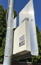Attached is an image of a combination ALRP/Speed Enforcement Camera, approximately 32" wide, 16" high and 2.5" deep.
The image was taken facing north west from the sidewalk of SW Wilsonville Road, 133 feet North of the intersection with SW Meadows Pkwy. Lat/Long (45.3106, -122.7481).
The device is Located approximately 8' above ground and attached to an LED street lightpole (No number seen) on the West side of Wilsonville Road.
The device has an illuminated 2-digit dot matrix amber MPH display on its North face (right side in the image).
Original image size: 585 x 913 pixels, 96 dpi, 140.8 kbytes
150, KE7WNB, VARA FM, N7OGM-10, 145.050, Milwaukie, Clackamas, Oregon
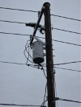Attached is an image of a utility pole at 5060 SE Lake Rd. Milwaukie.
The image was taken facing north from the front yard of 5060 SE Lake Rd. Lat/Long ((45.4302, -122.6100)).
Typical transformer along with other utility connections. The Pole is numbered PGECo D22 6 Pole No 1742 1978 It also has a Pole Inventory # A4628762 along with A tag with 5060 on it.
Original image size: 649 x 865 pixels, 96 dpi, 98.1 kbytes
150, N1ACW, VARA FM, N1ACW-10, 145.530, Lake Oswego, Clackamas, Oregon
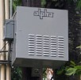Attached is an image of a fibre network distribution box, approximately 600mm wide, 700 mm high and 400 mm deep.
The image was taken facing north west from the centreline of Greentree Road 25m north east of the intersection of Greentree Road and Sunnyhill drive. Lat/Long (45.4034, -122.6872).
The distribution box is Located approximately 3m above ground and attached to a newer utility pole on the north side of Greentree Road. The utility pole also has a street light 6m above the ground. The utility pole is numbered: PGE D21 16A 605.
The box has an illuminated green light on its north western face (right side in the image).
Original image size: 648 x 635 pixels, 96 dpi, 97.7 kbytes
{kind=link}
{kind=link}
{kind=link}
{kind=link}
{kind=link}
{kind=link}
{kind=link}
{kind=link}
{kind=link}
{kind=link}
{kind=link}
{kind=link}
{kind=link}
{kind=link}
{kind=link}
{kind=link}
{kind=link}
{kind=link}
{kind=link}
{kind=link}